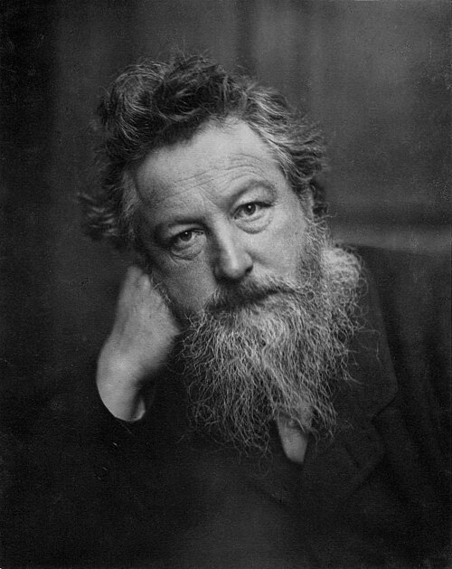

What Will You Discover?
Welcome! Here you will learn where aesthetics and craft come from, meet William Morris, explore five families of crafts, decode the principles of design, and test yourself with games. Explore original illustrations and real craft photographs throughout the site.
Understanding Art: Aesthetics vs. Craft
“Leaf & Vine”: original illustration inspired by Arts and Crafts patterns. Meaning: beauty grows from repeated, patient design.
Aesthetics: the study of beauty
From the Greek eisthesis, “perception.” Aesthetics is a branch of philosophy devoted to the study of art and beauty. The term was used in the 18th century by the German philosopher Alexander Baumgarten. It also refers to the principles governing the nature and appreciation of beauty, especially in visual art (Rader, 1979).
Craft: skill of the hand
From the German Kraft, “power” or “ability.” Craft applies human skill through the hand. It produces things for human purposes, and shows its prettiness around a goal external to the object itself (Dutton, 1990).
Aesthetic Art
Valued mainly to be perceived and appreciated for its beauty and meaning.
Craft
Valued for skill, speed and patience, made for a purpose such as wearing, sitting, storing or decorating.
Where they meet
A hand-woven cloth is useful and beautiful. Good craft is art with a job.
The Arts and Crafts Movement & William Morris
Arts and crafts started in the 19th century in Europe as a design reform and social movement initiated by William Morris. It involves making things that require a combination of skill, speed and patience. Morris (born March 24, 1834, Walthamstow, England; died October 3, 1896, London, aged 62) was known for pattern designs on fabrics and wallpapers. A proponent of socialist ideals, he believed a designer should master every medium, producing intricate, intertwining fruit, flower and foliage patterns.
“Have nothing in your houses that you do not know to be useful, or believe to be beautiful.”William Morris, The Beauty of Life (1880)
Types of Arts and Crafts
Artists have unique skills and perceptive abilities, but also needs and motivation. Creating works their audience accepts brings social acceptance and recognition, and those works make pleasing environments. There are five families of crafts. Choose one:
Principles of Design and Composition
Art principles are created by combining art elements. Artists use organizing principles to develop forms that inform. To analyze or compose artwork, you must understand how they work (Elsen, 1981). Tap a card to flip it.
Motivated Functions of Art
Motivated purposes are the intentional, conscious aims of the creator: to bring political change, comment on society, convey a mood, address psychology, sell a product, or simply communicate.
Art Gallery: Explore the Artworks
Click an artwork or photo to learn its story. The original illustrations were created by our group; craft photos are credited with their sources and licenses.
Artist Spotlight: William Morris

William Morris, photographed by Frederick Hollyer around 1887. Image source and public-domain details.
English designer · 1834–1896
Biography: Born March 24, 1834 in Walthamstow, England; died October 3, 1896 in London at age 62.
Notable works: Pattern designs for fabrics and wallpapers, with intricate intertwining fruit, flower and foliage motifs.
Contribution: He initiated the Arts and Crafts movement as a design reform and social movement, and held that a designer should master the skills of any medium.
Module link: His wallpapers show pattern and repetition, rhythm, harmony and symmetrical balance, and prove that functional objects can be art.
Interactive Zone: Play, Solve, and Learn
Answer all 8 questions, then press Check Answers.
Flip two cards to match each craft with its meaning. Fewer moves is better!
Read the clue and name the design principle.
Art Appreciation Reflection
“Have nothing in your houses that you do not know to be useful, or believe to be beautiful.”William Morris, The Beauty of Life (1880)
What we learned: Aesthetics studies beauty, while craft is skill of the hand. Together they explain why a woven cloth, a carved spoon or a folded crane can move us. We learned five craft families, nine design principles and five motivated functions of art.
Why it matters: Crafts carry skill, patience and culture. Appreciating them honors the makers.
Everyday life: Art is in the clothes we wear, the furniture we use and the cards we give. Noticing design makes ordinary things richer.
References and Image Credits
Sources (APA 7th edition)
Image and media credits
The logo, animations, and illustrated artworks are original creations made with HTML, CSS and JAVASRIPT by our group. “Leaf & Vine” is inspired by the foliage patterns of William Morris; our interpretation: repetition and rhythm make nature feel orderly and calm. Selected craft photographs are from Wikimedia Commons; each gallery story links to the photographer, source, and license.